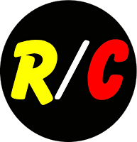
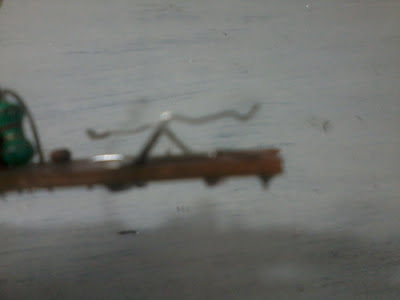
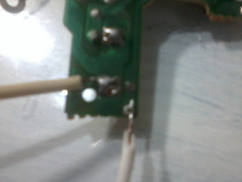
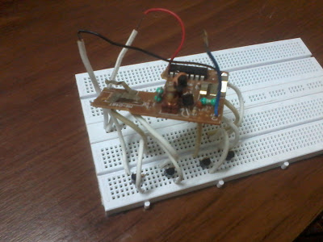

Como todo buen geek, de pequeño me fascinaban los autos RC (radio control), no tanto por el entretenimiento que supone jugar con ellos si no por la fascinación de averiguar su funcionamiento y todo lo que se puede hacer desarmando uno para convertir su mecanismo en algo completamente distinto.
Así pues hoy he visto en mi repisa el ultimo que me quedaba sin desarmar y pensé que ya era hora de decidir cual sería su destino, lo que hice fue adaptarlo para poder controlarlo desde la PC usando las teclas de dirección del teclado (como si de un juego se tratase), nuevamente, con miras ha hacer con ello algo un poco más interesante.
Para empezar cabe aclarar que dentro de la gran variedad de diseños, formas y sabores de los autos RC yo he hecho esto adaptado al mio, pero resulta trivial hacerlo para el auto que tengas a la mano.
Hardware
En la imagen pueden ver al auto y su control, el cual tomaremos y desarmaremos para sacar por completo su placa de circuito.

Para retirarlo sacaremos todos los tornillos y cortaremos los cables del conector de la batería (dejando estos en el circuito), el resultado es este:
Ahora podemos soldar alambres más cómodos para la protoboard en los cables de alimentación eliminando aquel interruptor.
Como se puede observar el funcionamiento de esta placa consiste en 4 interruptores metálicos que al empujarse cierran unos contactos, así que lo que hice fue soldar un cable en cada contacto como se aprecia en la imagen.
  
Básicamente lo que haremos será tomar la señal emitida por el puerto paralelo de la PC para saturar un transistor, el cual “unirá” a través de estos cables los contactos del interruptor del control, que a su vez accionara el auto.
El esquema de conexión es el siguiente:

El montaje en la protoboard luce así:
 
La alimentación la he tomado también del puerto paralelo como se puede ver, pero lo ideal sería usar una batería de 9V separada, para potenciar mejor la placa y tener un mayor alcance, para hacer esto debemos dejar conectado el cable a masa (PIN 25 del puerto) y retirar simplemente la conexión del PIN 1 para conectar la batería (tanto positivo como negativo).
Aquí se ve como conecté en el puerto paralelo (usé el cable de una vieja impresora para facilitarme el puerto hasta la mesa, pero se puede hacer directamente en el puerto del mainboard):

Software
Mi auto RC funciona accionando cada par de ruedas laterales de forma independiente, es decir: para cada movimiento es necesario accionar simultáneamente 2 interruptores en la combinación adecuada. Para dar marcha hacia adelante o atrás hay que accionar simultáneamente 2 interruptores del control, para girar se accionan 2 interruptores opuestos, de forma que un par de ruedas giren en un sentido y el otro par de ruedas en el sentido opuesto haciendo así girar el auto.
El software que escribí hace trabajar a mi auto como se puede observar, más si se quiere usar un auto cuya dirección es distinta se debe adaptar el código.
Además el software está escrito para sistemas Unix, yo específicamente he usado una distribución GNU/Linux. Recuerda asegurarte de tener instalada la librería ncurses* en tu sistema.
/*
* ============================================================================
*
* Filename: rc.cpp
*
* Description: Código para controlar auto RC por puerto paralelo
*
* Version: 1.0
* Created: 12/10/12 20:23:28
* Revision: none
* Compiler: g++
*
* Author: Daniel Campoverde Carrión [Alx741]
* Organization: www.silly-bytes.blogspot.com
*
* ===========================================================================
*/
#include <iostream>
#include <ncurses.h>
#include <sys/io.h>
#define puerto (0x378) //Puede ser (0x278)
using namespace std;
int main(void){
//inicializamos ncurses
initscr();
cbreak();
noecho();
nonl();
intrflush(stdscr, FALSE);
keypad(stdscr, TRUE);
//Abrir puerto y configurar permisos
if(ioperm(puerto,1,1)){
cout << "Error de permisos" << endl << flush;
}
int ch;
//recibimos las pulsaciones
//bit1,bit3 -> adelante
//bit2,bit4 -> atras
//bit3,bit2 -> derecha
//bit4,bit1 -> izquierda
while(true){
ch=getch();
if(ch==32) outb(0,puerto);
if(ch==259) outb(5,puerto); //ascii 259=(arriba)
if(ch==258) outb(10,puerto); //ascii 258=(abajo)
if(ch==261) outb(6,puerto); //ascii 261=(derecha)
if(ch==260) outb(9,puerto); //ascii 260=(izquierda)
if(ch==27){ outb(0,puerto); break;}
}
//finalizamos ncurses (regresamos la consola a la normalidad)
echo();
resetty();
endwin();
return 0;
}He usado la librería ncurses para manejar las pulsaciones de teclado, sin embargo lo precario del código y la falta de investigación sobre la librería me ha obligado a usar un mecanismo de parada, así pues si pulsamos la tecla dirección adelante el auto avanzará y no se detendrá hasta que pulsemos la barra espaciadora, y lo mismo sucederá con el resto de teclas. Quizás solucione este inconveniente usando SDL pero en otro momento será…
Nos ubicamos en el directorio del código y compilamos el código con (asegúrate de obtener el makefile del repositorio en Github):
$ makeEjecutamos como root:
# ./rcEl programa esperará por nuestras pulsaciones en el teclado y sacara los bits pertinentes por el puerto paralelo, accionando nuestro auto RC.
Como vemos en el código lo correcto para finalizar el programa es presionar la tecla Esc para que nuestra terminal vuelva a la normalidad.
Aquí un video de el auto en acción: